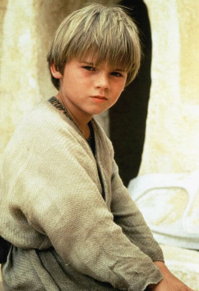

A tragedy about the importance of let it go, loneliness anger and redemption.
Anakin was born in a very poor planet called Tatoone, but he wasn't alone, his mother was there, she was everything for him, but they were slaves, Anakin wanted to free everyone in the galaxy but he didn't know how. When he was 9 years old, he met two Jedi Knights called Qui Gon Jin and Obi Wan Kenobi, they were in a mission with the princess of Naboo (Padme Amidala), Qui Gon Jin believed that Anakin was the Chosen one, who will destroy the darkness in the galaxy and restore the peace, Qui Gon Jin thought that because Anakin didn't have father, he was conceived by the force. When Anakin met Those Jedi Knights, he wanted to be free and then become in a Jedi Knight in order to make the galaxy safer for everyone, he wasn't moved by the power, he was just a child that wanted to set free his mother and him. Anakin decided to be trained by Qui Gon to be a Jedi Knight and then go back to set free his mother.
At the end of the first film, Qui Gon Jinn died, so Anakin wil be the Obi Wan apprentice, at the beginning, no one trusted Anakin because he was too old to be trained as a Jedi, no one believed he could be the chosen one, but he was a brilliant student and he became in the most powerful jedi in the order, his abilities were in a next level, however his emotions were a chaos, his mind was full of anger and regrets, his thoughts were with his mother, he came back but when he found her, she was dead by a gang thieves, he decided to kill all the thieves, although it was forbidden by the jedi order. Anakin felt in love with the senator Padme Amidala, she was like something more than a mother for Anakin, so he was determined to protect her from this dark and dangerous galaxy. But no one can know his marriage with her, otherwise he would be removed from his rank as Jedi Knight.
Three years later, Anakin had a vision about Padme's dead, he was terrified because he had a same vision about his mother before she died. Anakin wants to protect Padme but he didn't know how, everyone in the order have a bad feeling about him, his master is like a brother for him but he doesn't know how to talk about this feeling with him, so he decided to trust in the chancellor Palpatine, the leader of the galactic republic, but the chancellor is a Sith Lord (a dark force user against jedi), the chancellor listened Anakin doubts as the father he didn't have, the chancellor manipulated Anakin in order to turn him into the dark side with promises about how to save Padme's life.
By order of the chancellor, the jedis were declared as traitors, then Anakin killed many jedis, he wasn't a jedi anymore, he was corrupted and confused about his actions, at the end of the third film, he killed Padme and fought against his old master Obi Wan, he failed, Obi Wan almost killed him, he survived thanks to the chancellor, but his wounds were fatal, henceforth, he must wear a suit that let him breathe and live, that day Anakin died and from his ashes Darth Vader was born.